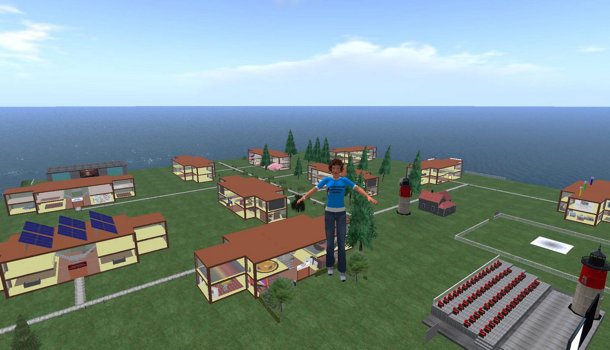

Early video games were easily identifiable as games. They had basic goals and set rules of play. As games have developed in complexity, they have allowed for newer options and an expanded idea of what constitutes a game. At the same time, the aesthetics and design of game culture have been applied to tools and entertainment phenomena that are not technically games. The result is a blurring of the lines between games and other forms of communication, and the creation of new means of mixing information, entertainment, and communication.
Video games have developed in complexity and flexibility to the point that they are providing new kinds of social interactions. This is perhaps clearest when games are compared to physical sports. Most of the abstract reasons for involvement in sports—things like teamwork, problem solving, and leadership—are also reasons to play video games that allow online team interaction. Sports are often portrayed as a social platform where people can learn new skills. Amateur sports teams provide an important means of socialization and communication for many people, allowing individuals from different gender, ethnic, and class backgrounds to find a common forum for communication. Video games have similar capacities; players who engage in online team battles must communicate with one another effectively and learn to collectively solve problems. In fact, video games could arguably provide a more inclusive platform for socializing because they do not exclude most socially or physically challenged individuals. The social platform of online games is certainly no utopia, as competitive endeavors of any sort inevitably create opportunities for negative communication, but it allows people of different genders, races, and nationalities to play on equal footing, a feat that is difficult, if not impossible, in the physical realm.
Massively multiplayer online role-playing games (MMORPGs) such as World of Warcraft, EverQuest, and EVE Online allow for an unprecedented variety of goals to be pursued. According to one study on online communities,
[t]hat means games are no longer meant to be a solitary activity played by a single individual. Instead, the player is expected to join a virtual community that is parallel with the physical world, in which societal, cultural, and economical systems arise.Panayiotis Zaphiris, Chee Siang Ang, and Andrew Laghos, “Online Communities,” in The Human-Computer Interaction Handbook: Fundamentals, Evolving Technologies, and Emerging Applications, ed. Andrew Sears and Julie Jacko (New York: Taylor & Francis Group, 2008), 607.
MMORPGs can function as a kind of hybrid of social media and video games in this respect. In some instances, these games could function entirely as social media, and not as games. Consider a player who has no desire to achieve any of the prescribed goals of a game, such as going on quests or accomplishing tasks. This individual could simply walk around in social areas and talk to new people. Is the player still playing a game at this point, or has the game turned into a type of social media?
Virtual worldsA digitized space in which an online community can interact. such as Second LifeA virtual world in which users create avatars and participate in an online community. are good examples of the thin line between games and social media. In this virtual world, users create avatars to represent themselves. They can then explore the world and take part in the culture that characterizes it. The Second Life website FAQ (frequently asked questions) tries to illustrate the differences between a virtual world and a video game:
While the Second Life interface and display are similar to most popular massively multiplayer online role playing games (or MMORPGs), there are two key, unique differences:
Creativity: The Second Life virtual world provides almost unlimited freedom to its Residents. This world really is whatever you make it. If you want to hang out with your friends in a garden or nightclub, you can. If you want to go shopping or fight dragons, you can. If you want to start a business, create a game or build a skyscraper you can. It’s up to you.
Ownership: Instead of paying a monthly subscription fee, Residents can start a Basic account for FREE. Additional Basic accounts cost a one-time flat fee of just $9.95. If you choose to get land to live, work and build on, you pay a monthly lease fee based on the amount of land you have. You also own anything you create—Residents retain intellectual property rights over their in-world creations.Second Life, “Frequently Asked Questions: Is Second Life a game?” http://secondlife.com/whatis/faq.php#02.
Virtual worlds may differ from traditional video games in key ways, but these differences will likely be further blurred as games develop. Regardless of the way these worlds are classified, they are based heavily on the aesthetics and design of video games.
Virtual worlds are societies in which communication can be expanded to relay information in ways that cannot be done with other forms of media. Universities have set up virtual classrooms in Second Life that employ techniques for teaching that are otherwise impossible. Curriculum can be set up to take advantage of the virtual world’s creative capacity.Stacy Kluge and Liz Riley, “Teaching in Virtual Worlds: Issues and Challenges,” Issues in Informing Science and Information Technology 5 (2008): 128. For example, a class on architecture could lead students through a three-dimensional recreation of a Gothic cathedral, a history class could rely on an interactive battlefield simulation to explain the mechanics of a famous battle, or a physics class could use simulations to demonstrate important principles.
Figure 10.11
Virtual classrooms have been used in Second Life as new teaching tools.
Virtual worlds have been used to relay new kinds of information as well. In 2007, specialists developed virtual-reality simulations to help patients with Asperger’s syndrome navigate through social situations. Individuals with Asperger’s syndrome have difficulty recognizing nonverbal cues and adapting to change. The simulations allowed these patients to create avatars that then played out social situations such as job interviews. The simulations could be adjusted to allow for more complicated interactions, and the users could replay their own performances to better understand the simulation.“Avatars Help Asperger Syndrome Patients Learn to Play the Game of Life,” news release, University of Texas at Dallas News Center, November 18, 2007, http://www.utdallas.edu/news/2007/11/18-003.html. The creation of avatars and the ability to replay scenes until the user improves performance is a direct influence of video games.
Figure 10.12
FarmVille is integrated with Facebook and lets players grow and harvest crops to expand their farms.
Social media outlets such as Facebook have also used video games to expand their communication platforms. FarmVilleA game that interacts with the social platform Facebook, in which players grow, harvest, and profit from farming., a game in which players plant, harvest, and sell crops and expand their farm plots with the profits, is integrated with Facebook so that all users can connect with their real-life friends in the game. The game adds another aspect of communication—one centered on competition, strategy, and the aesthetics of game-play—to the Facebook platform. In 2010, FarmVille had 80 million users, an unprecedented number of people playing a single game. Other games for Facebook include Lexulous (formerly Scrabulous), a game that mimicked the board game Scrabble closely enough that it had to be changed, and Pet Society, a game that allows users to raise virtual animals as pets. These games are unique in their demographic scope; they seek to engage literally anyone. By coupling games with social media sites, game designers have pushed the influence of video games to unprecedented levels.Tim Walker, “Welcome to FarmVille: Population 80 million,” Independent (London), February 22, 2010, http://www.independent.co.uk/life-style/gadgets-and-tech/features/welcome-to-farmville-population-80-million-1906260.html.
Due to the increasing popularity of video games, many social networking websites have emerged in recent years that target hard-core gamers and casual gamers alike. The website GamingPassions.com describes itself as a “free online dating and social networking site for the Video Gaming community” that “allows you to meet other video game lovers who ‘get it.’”Gaming Passions, “Welcome to Gaming Passions,” http://www.gamingpassions.com/. Others, such as DateCraft, target players who share a love of specific games, such as World of Warcraft. These websites allow players to socialize outside of the confines of a video game and provide a way for fans of any game to connect.Guy Fawkes, “Online Dating for Video Gamers,” Associated Content, March 19, 2010, http://www.associatedcontent.com/article/2806686/online_dating_for_video_game_players.html?cat=41.
The maker of FarmVille, a company called Zynga, has released a number of social networking games that can be played via Internet-enabled mobile phones. Mafia Wars, a simulated version of organized crime that originated as an online game, lets users manage their money and complete jobs from their mobile phones. This innovation is only a change of platform from the computer to the phone, but it promises to make gaming a common means of social interaction.
Phones are used to communicate directly with another person, whether through text messages, Facebook posts, or phone calls. Adding games to phones creates a new language that people can use to communicate with each other. One can imagine the ways in which a spat between friends or a couple hooking up could be communicated through this medium. During the week of Valentine’s Day in 2010, the creators of FarmVille reported that users sent more than 500 million copies of virtual gifts to each other.Mathew Ingram, “Farmville Users Send 500M Valentines in 48 Hours,” GigaOM, February 10, 2010, http://gigaom.com/2010/02/10/farmville-users-send-500m-valentines-in-48-hours/. Competition, aggression, hostility, as well as generosity and general friendliness are given new means of expression with the addition of video games to the mobile platform.
An important genre of games is often overlooked when focusing on the overall history and effect of video games. These games are created to get a specific point across to the player, and are generally low-budget efforts by individuals or small groups. The group Molleindustria puts out a host of these games, including Oligarchy, a game in which the player is an oil-drilling business executive who pursues corruption to gain profits, or Faith Fighter, in which religious icons fight each other.Molle Industria, http://www.molleindustria.org/en/home. Downing Street Fighter is a similar game, designed as a satirical representation of the United Kingdom’s 2010 elections.Zain Verjee, “Will There Be a Knockout Blow?” CNN, May 3, 2010, http://ukelection.blogs.cnn.com/2010/05/03/will-there-be-a-knock-out-blow/.
Other games in this genre include a great deal of content that informs players about current events. One example is Cutthroat Capitalism, where users play the part of Somali pirates who are carrying out kidnapping and piracy missions. The player must weigh the risks and rewards of their exploits given a variety of economic factors.Scott Carney, “An Economic Analysis of the Somali Pirate Business Model,” Wired, July 13, 2009, http://www.wired.com/politics/security/magazine/17-07/ff_somali_pirates. This game allows players to understand the forces at work behind international phenomena such as piracy. Other games include the Redistricting Game, a game aimed at encouraging congressional redistricting reform, and Planet Green Game, in which players find ways to conserve energy.William McGeveran, “Video Games With a Message,” Info/Law (blog), June 18, 2007, http://blogs.law.harvard.edu/infolaw/2007/06/18/video-games-with-a-message/. These games’ publishers have used their medium to transmit information in new ways. Political satire in the medium of the video game allows the player to, in effect, play a satirical joke to its logical conclusion, exploring the entire scope of the joke. Advocacy games engage players with an interactive political message, rather than sending out traditional media ads. Mainstream groups such as PETA have also turned to video games to convey messages. During the 2008 Thanksgiving season, the animal-rights group released a parody of the popular Cooking Mama games to demonstrate the cruelty of eating meat.Alexander Sliwinski, “PETA Parody Grills Cooking Mama,” Joystiq, November 17 2008, http://www.joystiq.com/2008/11/17/peta-parody-grills-cooking-mama/.
Figure 10.13
The unauthorized PETA edition of Cooking Mama tackles the issue of animal cruelty.
Although games of this type are not in a league with game series like Halo—either in design or in popularity—they are pushing the boundaries of the video game as a form of media. Political pamphlets were a major source of information and political discourse during the American Revolution. Video games may well come to serve a similar informational function.
Several examples of the ways in which virtual worlds could be used for education were mentioned in this section.
Review Questions
Questions for Section 10.1 "The Evolution of Electronic Games"
Questions for Section 10.2 "Influential Contemporary Games"
Questions for Section 10.3 "The Impact of Video Games on Culture"
Questions for Section 10.4 "Controversial Issues"
Questions for Section 10.5 "Blurring the Boundaries Between Video Games, Information, Entertainment, and Communication"
Video games are a growing industry, and the budgets to create them are increasing every year. Video games require large production teams. The following jobs are important aspects of video game production:
Choose one of the jobs listed here or find a different job associated with the games industry and research the requirements for it online. When you have researched your job, answer the following questions: